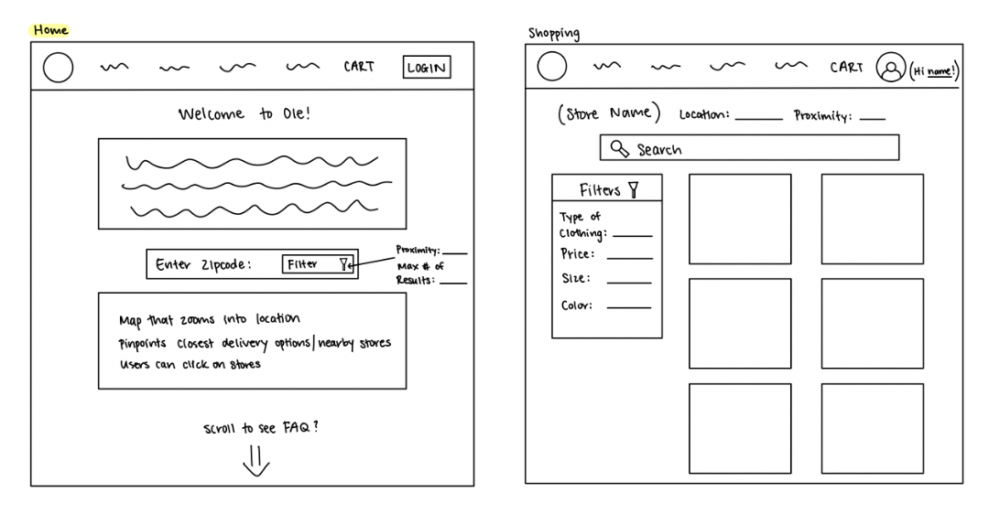
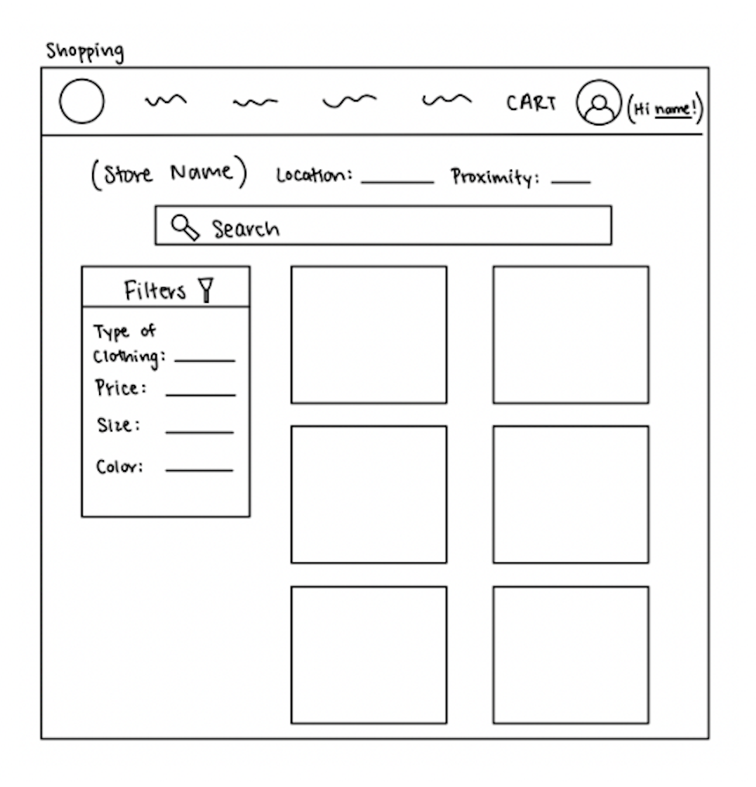
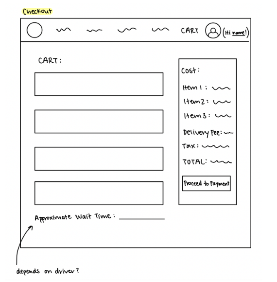
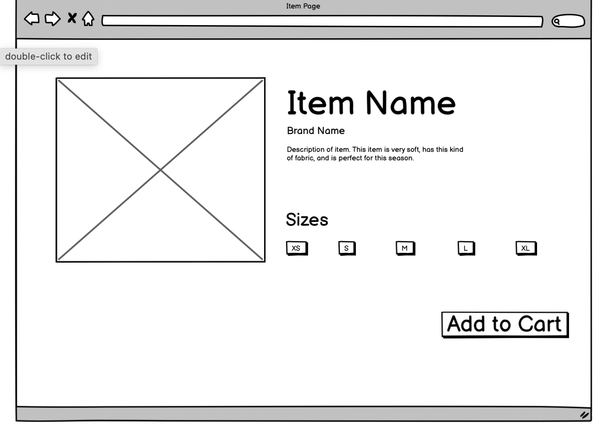
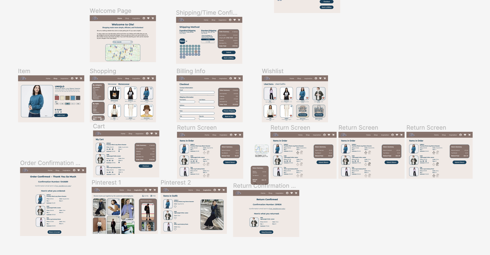

The process of creating a satisfactory design is often a complex one. At a high level, designers create sketches,
lofi wireframes, hifi prototypes, and at last a final product. Laid out this way, the process doesn’t seem so bad.
But with each version comes multiple rounds - iterations - of work. Changes both big and small are fueled by
feedback from the design team itself and outside users. It is this iteration that is core to design, driving it
toward a product that is well-tested, well-designed, and well-received. In this project, we sought to familiarize
ourselves with iterative design by creating an interactive mockup based on an active startup idea.
Ole is a shopping service that allows users to order online without worrying about whether clothes will fit or look
good on them. Users input their zip code and view clothing items from various stores in the area. Thus, the clothes
are not limited by brand or store. A personal shopper picks up the items and delivers them at a specific time
(determined by the user at checkout). While the driver waits, the user can try on each clothing item and select
which ones to return or keep. The items they wish to return are given back to the driver, who completes the return
process on the user’s behalf.
Because of the delivery-based nature of the service, we decided to design for a desktop view. We imagine that most
users will be on their computers when in the comfort of their own homes (or generally indoors), and thus would
access Ole through those devices.
Part I - Sketching & Wireframing
Sketches
Set #1: Left: Sketches showing concepts for core pages: Home, Shopping, Location/Time Selection, and
Cart. The Inspiration page was something we thought might be helpful for users: a way to view pre-existing
outfits and gain inspiration for one's own style.
Right: Additional sketches for the Inspiration page, which we considered a more unique page.
Set #2: Sketches show the general layout of the Home page, Shopping page, and Cart page.



Set #3: Sketches of each page & user's thoughts. Users of Ole typically want to shop new clothes but finds
in-person shopping tiring.
Set #4: Sketches of potential shopping, return, and shipping confirmation pages.
Wireframes
A homepage consisting of a welcome message and a brief description of the service. Users can enter their zip
code to see which stores/clothing items are available nearby. A map at the bottom of the page updates when the
user enters a valid zip code.
A page displaying all the items a user has added to their cart. Basic information about each item, as well as
the total price, is shown to the right.
A page that allows users to input their information for the order. The Order Summary box still appears to
remind users of what is generally in their order. They can return to the Cart page if they need more details, or
would like to edit their order. In a fully built application, there would be a very similar page for billing
information.
This is where users can choose which items to keep and which items to return. It is very similar to the Cart
page, but has checkboxes in lieu of the trash can icon. Checking the box associated with an item updates the
Return Summary box.
A Pinterest-style page that allows users to scroll through various outfits. If they find an outfit they like,
they can click on it to view the items in the outfit and/or "heart" it. There is also a scrollable side section
with suggested outfits based on the user's past likes.
If a user clicks on an outfit, they are shown an enlarged image of the outfit, alongside the items in the
outfit. We debated having an "Add to Cart" button next to each item, but decided against it. To add an item to
cart, one would have to provide a size, color, and quantity, as well as be aware of the price. This was more
information that we thought would be wise to display. We decided it would be best to separate this functionality
and simply allow the user to navigate to an item's page by clicking on the image of it.
A simple order confirmation screen that lets the user know their purchase was successful. The button in the
middle of the screen takes the user to the next step in the process: choosing which items to return and accept.
A page where people can choose what time they want their personal shopper to arrive with their items.

The page for each item, where items' details are displayed and can be customized.
A simple confirmation screen that lets the user know their transaction was successful. The button in the middle
of the screen takes the user back to the Shop page in case they want to follow up on their order.
Part II - Mockups
Preview of Prototype

Critique Feedback
Overall & Miscellaneous
Keep the same padding and margin across all pages. The buttons involved in the checkout process appear to
be in slightly different positions on different pages.
Keep the rounding of boxes and images consistent.
The navigation bar is not fully functional on all pages. Fixing this will help emulate the actual
experience of using the site more accurately.
The navigation bar in particular is a bit "jumpy" bewteen pages.
A wishlist page might be helpful as a way to store liked items.
Browsing (Shopping) Page
Placing filters at the top or left feels more intuitive.
Item Page
Add a description for each item.
Checkout Page
Users cannot go back to the previous page while checking out, which is commonly supported and expected
functionality.
Shipping/Time Confirmation Page
Consider offering ranges instead of specific times.
Strengthen the hierarchy. At the moment, numerous elements appear to be at the same level of hierarchy
when it seems like there should be an order.
Order Confirmation Page
Show a summary of the items that were ordered.
Because we received numerous critiques about consistency, we sought to strengthen our style guide, which can be
found below:
Based on other feedback from critique, we improved our prototype in several ways:
Added Order Summary and Return Summary sections to provide more helpful information during the checkout
process.
Added the ability to go back to previous steps in the checkout process.
Standardized rounding and positioning of elements. In particular, the Summary sections and checkout-related
buttons are now all positioned in the same location.
The navbar is functional on all pages.
Added a wishlist page.
Altered the location of the filters on the Browse page.
Added a description for each clothing item.
Redesigned the Shipping/Time Confirmation page so that it has a clearer, more intuitive hierarchy. In
particular, text sizes are more clearly different. The page also offers time ranges instead of concrete times.
Revised Prototype
Part III - User Testing
User testing tasks & results
Introduction
Imagine you are a shopper looking to use Ole to pick out a blue sweater for
the winter months. You already added a couple of items to the cart earlier today and are just looking to add
one more item. Please think out loud as you navigate the prototype from page to page. Please note that the
screens are not interactive; this interface is an interactive mockup made on prototyping software. This
means, for example, the buttons with links will take you from webpage to webpage but will not alter the
contents of the page you are on (e.g. if you click ‘like’ on a clothing item the heart will not
change color). We are seeking feedback on the interaction, navigation, hierarchy, and intended
functionality.
Subtasks
Without leaving the homepage, what are your initial
impressions of the website? Explain your answer.
Browse the page and look for a blue sweater. Add it to your
cart. [5-point rating scale: Very difficult to Very easy]
From the cart page, access the ‘inspiration’ page
from the navigation bar. Click the image with the blue sweater to explore potential outfits you can pair
the clothes with. Describe your thoughts on the interfaces as you go. Is it easy to navigate? How does
it compare to services like Pinterest? [5-point rating scale: Very difficult to Very easy]
Go back to the cart. Purchase all of the items that are in
the cart (the other ones are there from a previous visit you had to this page in this scenario). Go as
far as you can until you get to the confirmation page. Move on to the next task when you're done.
[5-point rating scale: Very difficult to Very easy]
After reaching the confirmation page, return the coat.
[5-point rating scale: Very difficult to Very easy]
What 3 words would you use to describe Ole's webpage?
Explain your answer.
Any overall comments about the interface? Were there any
places where you felt confused?
Videos of User Tests
Video #1
Video #2
Video #3
Summary of Results — Sorted By Theme
Navigation
1. Tester Feedback
Users enjoyed how most pages in the
checkout process showed what ordered and thought check-out was fluid.
Two users directly to look at the
cart cart instead of first looking at browse page.
One user assumed that by clicking “submit”
that they would be sent to would go to a final confirmation page before order being placed. Maybe rename
‘place order’.
Users were often confused about if an item was added to the
cart.
Enjoyed shopping page but wanted a number in the cart and wanted a popup
stating that the website was successfully updated.
2. Potential Interface Changes
Rename the ‘submit’ button to ‘place
order’ so the user is more aware of what pressing the button does.
Confirmation message appears at top of screen when item is added
to cart and cart has number of items displayed as icon.
Remove the navigation bar from the home page so that users know
that they are supposed to enter their zip code to enter rather than jump to other pages first.
Hierarchy
1. Tester Feedback
Confused about the keep/return functionality on the return page.
Users wanted more ways to sort (e.g. by color) so that they could
find
the
blue sweater quicker.
Confused about how to select times on the shipping
confirmation
page but liked that she could pick when/what the item was and how they could get it.
2. Potential Interface Changes
Make the buttons on the select time page look more similar to
other buttons on the website and have more affordances (e.g. darken when hovering) so that
people
know
they can push them.
Remove the keep button on the return page so that people
aren’t confused by that functionality.
Add filters.
Functionality
1. Tester Feedback
Thought website was a base prototype for shopping companies
based on home page.
Liked the front page but didn’t like the word frictionless —
liked
how
it
gave introduction to the website.
Wish it didn’t make you select options in order on the
return page. Was easy once figured out.
2. Potential Interface Changes
Make the return page operate so you do not have to choose which
items to keep/return in sequential order.
Make it more clear on the homepage what the purpose of the
start-up is.